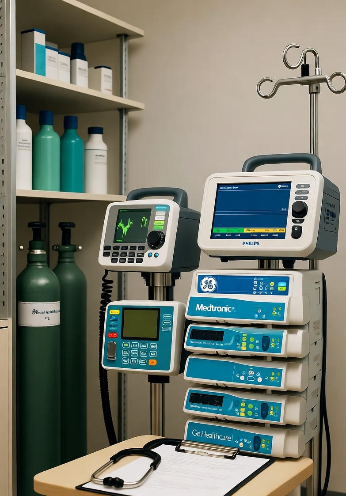

Поставка оборудования
Комплексные поставки медицинского оборудования от ведущих мировых производителей
ПодробнееМы предлагаем современное медицинское оборудование и решения для лечебных учреждений любой специализации. Гарантия качества и сервисное обслуживание.
Поставляем медицинское оборудование ведущих мировых производителей
Мы специализируемся на поставках современного медицинского оборудования и технологий для лечебно-профилактических учреждений.
Мы сотрудничаем с ведущими мировыми производителями и предлагаем комплексные решения для оснащения медицинских кабинетов, отделений и целых клиник.
Вся продукция имеет необходимые сертификаты и соответствует стандартам
Техническая поддержка и сервисное обслуживание
Мы предлагаем полный спектр услуг по оснащению медицинских учреждений

Категория: Урология. Материал: Нержавеющая сталь. Назначение: Для эндоскопических урологических операций.
Эндоскоп изготовлен из импортной нержавеющей стали, устойчивой к коррозии и высоким температурам. Оснащён оптическим стеклом немецкого производства, световодом и световым конусом для максимальной яркости. Применяются сапфировые линзы и направляющий индикатор для точной визуализации. Оптика с углом обзора 30° обеспечивает широкий и удобный обзор операционного поля. Используется высокотемпературная и высокопрочная керамика для долговечности. Оснащён клапаном из нержавеющей стали большого диаметра, что повышает пропускную способность и надёжность. Конструкция клапана облегчает обслуживание и предотвращает повреждения. При фиксированных внутренних и наружных тубусах эндоскоп и режущая петля могут вращаться на 360°, обеспечивая непрерывную перфузию.

Категория: Урология. Материал: Нержавеющая сталь медицинского класса. Назначение: Для эндоскопических урологических операций, включая лазерную литотрипсию (дробление камней в мочеточнике, мочевом пузыре и почках).
Корпус эндоскопа изготовлен из импортной нержавеющей стали, устойчивой к коррозии и стерилизации. Оптическая система выполнена из немецкого оптического стекла, оснащена оптоволокном и световым конусом, обеспечивая яркое и чёткое изображение. Применяется запатентованная технология линз типа “rod lens”, обеспечивающая высокую чёткость и широкий угол обзора. Используются сапфировые линзы, обладающие высокой прозрачностью и устойчивостью к повреждениям. Съёмный оптоволоконный канал - диаметр внутреннего рабочего канала до φ1,3 мм, что позволяет использовать различные типы лазерных волокон.

Категория: Урология. Материал: Медицинская нержавеющая сталь. Назначение: Для эндоскопического дробления и удаления камней из мочевого пузыря, мочеточников и почечных лоханок.
Корпус эндоскопа выполнен из импортной нержавеющей стали повышенной прочности. Оптическая система оснащена немецким оптическим стеклом, световолокном и световым конусом, обеспечивающими высокую яркость и контрастность изображения. Применяется запатентованная технология оптических линз типа rod lens, обеспечивающая чистое, устойчивое и широкое поле обзора. Имеется направляющий индикатор и сапфировые линзы, устойчивые к механическим повреждениям и термообработке. Клапан из нержавеющей стали - прост в обслуживании и защищён от повреждений. Возможность выбора автоклавируемой версии для стерилизации в паровом автоклаве. Широкий угол обзора позволяет оператору видеть зону работы и положение инструментов (включая щипцы или литотрипторы).

Категория: Урология. Материал: Нержавеющая сталь. Назначение: Для эндоскопического рассечения стриктур уретры и проведения реконструктивных урологических операций.
Корпус эндоскопа выполнен из импортной нержавеющей стали, устойчивой к коррозии и термообработке. Оснащён немецкой оптической системой - оптическое стекло, световолокно и световой конус обеспечивают яркое и чёткое изображение. Используется запатентованная технология линз типа Rod Lens, обеспечивающая высокую чёткость и широкий угол обзора. Имеется направляющий индикатор и сапфировые линзы, устойчивые к царапинам и высоким температурам. Клапан подачи воды из нержавеющей стали исключает риск утечек, облегчает обслуживание и предотвращает повреждения. Рабочий клапан на оболочке позволяет вводить направляющую проволоку 3 Fr, обеспечивая точное и безопасное проведение ножа при рассечении. Конструкция обеспечивает плавность и безопасность операции, снижая риск травм слизистой уретры.

Эндоскоп изготовлен из импортной нержавеющей стали. Эндоскоп оснащен немецким оптическим стеклом, световодом и световым конусом. С указателем направления и сапфировой линзой.
Применяется высокотемпературная и высокоинтенсивная керамика. Клапан большого диаметра из нержавеющей стали. Активный и пассивный можно выбирать свободно. Клапан из нержавеющей стали, прост в обслуживании, не повреждается. Когда внутренняя и внешняя оболочки неподвижны, рабочий элемент, эндоскоп и режущие петли могут свободно вращаться на 360°, обеспечивая непрерывную перфузию. Можно использовать низкотемпературную плазменную стерилизацию. Кольцо для большого пальца подвижно и более удобно.
Электрический морцеллятор для лапароскопических гинекологических операций.
Электрический морцеллятор для лапароскопических гинекологических операций: непрерывная работа, плавная регулировка скорости, реверс, электропривод + ручной режим. Класс безопасности: питание от внешней сети, тип BF, незащищённый от жидкостей, нельзя использовать в среде воспламеняющихся анестетиков; режим - непрерывный. Показания (область применения) Резекция тканей малого таза, адгезиолизис. Оофорокистэктомия, миомэктомия, реконструкция и перевязка труб, тотальная гистерэктомия, эндометриоз. Противопоказания (фрагмент). Миома > 8 см; либо > 3 см и количеством > 4. Субмукозные/интрамуральные миомы, делающие гистероскопию нецелесообразной. Большие размеры матки (≥ 10–11 нед. беременности), выраженный ожирение/спайки.

Маточный манипулятор чашечного типа (cup-type uterine manipulator).
Основной корпус инструмента - длинная металлическая трубка с рукояткой и механизмом фиксации (курковый замок, подвижный шток, шкала на стволе для регулировки глубины). В комплекте сменные насадки и чашечки разного диаметра и изгиба - они устанавливаются на дистальный конец для работы с шейкой и телом матки. Манипулятор такого типа используется при лапароскопических гинекологических операциях (в частности, при гистерэктомии, миомэктомии, тубэктомии и т.д.) для: фиксации, перемещения и позиционирования матки; улучшения визуализации анатомических ориентиров; подачи контраста или газа через цервикальный канал.

Категория: Гинекология. Эндоскоп изготовлен из импортной нержавеющей стали. Эндоскоп оснащен немецким оптическим стеклом, световодом и световым конусом. С указателем направления и сапфировой линзой.
Уникальная изогнутая на 22° трубка позволяет врачу легко найти левую и правую фаллопиевы трубы. Эндоскоп имеет ограничительный стопор, позволяющий легко контролировать глубину введения. Можно выбрать гистероскоп с ручкой и инструменты с металлической ручкой. Можно использовать низкотемпературную плазменную стерилизацию.

Категория: Гинекология. Эндоскоп изготовлен из импортной нержавеющей стали. Эндоскоп оснащен немецким оптическим стеклом, световодом и световым конусом.
Применяйте запатентованную технологию стержневой оптической линзы, четкое поле зрения. С указателем направления и сапфировой линзой. Применяется высокотемпературная и высокоинтенсивная керамика. Клапан большого диаметра из нержавеющей стали. Активный или пассивный можно выбирать свободно. Клапан из нержавеющей стали, прост в обслуживании, не повреждается. Можно использовать низкотемпературную плазменную стерилизацию. Когда внутренняя и внешняя оболочки неподвижны, рабочий элемент, эндоскоп и режущие петли могут свободно вращаться на 360°, обеспечивая непрерывную перфузию.

Эндоскоп изготовлен из импортной нержавеющей стали. Эндоскоп оснащен немецким оптическим стеклом, световодом и световым конусом. С указателем направления и сапфировой линзой.
Врач может удобно контролировать направление через прямой эндоскоп. Жесткие инструменты хорошо расположены, имеют длительный срок службы. Можно использовать низкотемпературную плазменную стерилизацию, можно выбрать эндоскоп, пригодный для автоклавирования.

Категория: ЛОР. Корпус эндоскопа изготовлен из импортной трубки из нержавеющей стали. В зеркале используются немецкое оптическое стекло, оптическое волокно и световой конус.
Благодаря запатентованной технологии стержневых линз изображение получается четким, а поле зрения ярким. С указателями направления и сапфировыми линзами. Опциональный эндоскоп для дезинфекции плазмой высокой температуры, высокого давления и низкой температуры. Хирургические инструменты изготовлены из импортной листовой нержавеющей стали с хорошими антикоррозийными характеристиками и без декоративного покрытия на поверхности.

Категория: ЛОР. Корпус эндоскопа изготовлен из импортной трубки из нержавеющей стали. В зеркале используются немецкое оптическое стекло, оптическое волокно и световой конус.
Благодаря запатентованной технологии стержневых линз изображение получается четким, а поле зрения ярким. С указателями направления и сапфировыми линзами. Опциональный эндоскоп для дезинфекции плазмой высокой температуры, высокого давления и низкой температуры. Хирургические инструменты изготовлены из импортной листовой нержавеющей стали с хорошими антикоррозийными характеристиками и без декоративного покрытия на поверхности.

Категория: ЛОР. Эндоскоп изготовлен из импортной нержавеющей стали. Эндоскоп оснащен немецким оптическим стеклом, световодом и световым конусом.
Применяйте запатентованную технологию стержневой оптической линзы, четкое поле зрения. С указателями направления и сапфировыми линзами. Можно выбрать автоклавируемый эндоскоп. Рабочие инструменты изготовлены из импортной нержавеющей стали, без покрытия, с хорошей антикоррозионной функцией, можно использовать стерилизацию низкотемпературной плазмой.

Категория: Ортопедия. Эндоскоп изготовлен из импортной нержавеющей стали. Эндоскоп оснащен немецким оптическим стеклом, световодом и световым конусом.
Применяйте запатентованную технологию стержневой оптической линзы, четкое поле зрения. С указателями направления и сапфировыми линзами. Можно выбрать эндоскоп со стерилизацией низкотемпературной плазмой. Рабочие инструменты изготовлены из импортной нержавеющей стали, без покрытия, с хорошей антикоррозионной функцией. Клапан из нержавеющей стали, прост в обслуживании, не повреждается. Прибор предназначен для наблюдения во время диагностических и лечебных артроскопических хирургических вмешательств в коленном и плечевом суставах. 1.1 Медицинские показания. Следующий список включает некоторые основные показания к использованию артроскопа, основанные на заключении опытного хирурга, и ни в коем случае не является исчерпывающим. Коленный сустав: Восстановление и резекция мениска. Остеоартроз коленного сустава. Повреждения хряща коленного сустава. Травмы и переломы колена. Плечевой сустав: Адгезивный капсулит. Диагностика и восстановление повреждений вращательной манжеты плеча. Хирургическое лечение травм тазовой губы. Хирургическое лечение нестабильности плеча. 1.2 Противопоказания. Суставы имеют фиброзную жесткость или ригидность. Имеются поражения вокруг суставов. Имеют серьезную системную инфекцию. Общее состояние пациента настолько плохое, что он не может переносить данного исследователя. Артроскоп противопоказан к применению, если, по мнению квалифицированного врача, его применение может создать состояние, которое будет представлять опасность для пациента.

Корпус эндоскопа изготовлен из импортной трубки из нержавеющей стали. В зеркале используются немецкое оптическое стекло, оптическое волокно и световой конус.
Благодаря использованию запатентованной технологии цилиндрической линзы изображение получается четким, а поле зрения ярким. С указателями направления и сапфировыми линзами. Опциональный эндоскоп для дезинфекции плазмой высокой температуры, высокого давления и низкой температуры.

Категория: Электрооборудование. Очиститель брюшины QXQ-1000J используется для промывания и аспирации органов в полости при лапароскопической хирургии с целью обеспечения чистоты поля зрения и очистки фекалий, предотвращения загрязнения и слипания после операции.
Очиститель брюшины управляется компьютером, регулируется положительное давление и отрицательное давление в соответствии с требованиями пользователя и отображает значение на экране. Он может производить ирригацию под положительным давлением и отсасывать под отрицательным давлением, его можно сочетать с синусоидальной трубкой и двухканальным отсасывающим устройством (D4403.D4403A) для ирригации и отсасывания, а также частой замены. Давление мойки: 75±5 кПа Давление всасывания: -65±5 кПа.

Категория: Электрооборудование. Используется при гинекологической эндоскопии и хирургических вмешательствах.
Для обеспечения чёткого поля зрения матка надувается газом под давлением. Питание 220 В±22 В 50 Гц±1 Гц. Номинальная мощность 30 Вт. Диапазон давления 1 кПа~30 кПа. Длина шага регулировки 1КПа. Давление установки 1~30 кПа. Давление срабатывания сигнализации 30 кПа.

Модель: Облегченный вертикальный 5-осевой обрабатывающий центр промышленного стандарта.
Вес: 1000 кг Размеры: 890 × 1206 × 1940 мм. ПЕРЕМЕЩЕНИЕ Оси X/Z: 340 × 150 × 120 мм. Поворот осей A/B: 360° / +35°. РАБОЧИЙ СТОЛ Макс. размер заготовки: 140 × 150 × 30 мм. Размер стола: 140 × 150 мм. Макс. нагрузка: 5 кг. ШПИНДЕЛЬ Конус шпинделя: F6 мм. Мощность двигателя: 4 кВт. Диаметр шпинделя: Ø80 мм. Макс. скорость (длительная): 28 000 об/мин. Макс. скорость (кратковременная): 40 000 об/мин. ТОЧНОСТЬ Позиционирование по осям X/Z: ±0,005 мм. Позиционирование по осям A/B: ≤40″. Повторяемость по осям X/Z: ±0,003 мм. Повторяемость по осям A/B: ≤8″. ИНСТРУМЕНТАЛЬНЫЙ ЖУРНАЛ Вместимость: 20 / 140 позиций (по выбору). Макс. длина инструмента: 55 мм. Макс. диаметр инструмента: Ø6 мм. Тип: Горизонтальный карусельный.

5-осевой стоматологический станок для влажного фрезерования.
ГСЛ-5М. Максимальная выходная мощность 1,7 кВт. Повторяемость ±0,005 мм. ШВП Направляющая Тайвань ХИВИН. Размер 680*520*700 мм. Инструменты 8. Ось Х、Y、Z、А、Б. Напряжение питания 220 В переменного тока. Номинальная частота 50/60 Гц. Мощность шпинделя 0,75 кВт. Давление воздуха >0,65 МПа. Метод охлаждения шпинделя Водяное охлаждение. Масса 150 кг. Диапазон обработки: ось А 360°. ось B +35°-20°. Шпиндель: Метод Влажный. Скорость вращения 60000 об/мин/мин. Обработка материала Абатмент премилл, дисиликат лития, Эластичная керамика, Янтарная керамика. Комплект титановых колонн Р1.5х14х6Дх50Р1.0х12х6Дх50, Р0,5x10x6Dx5. Стеклокерамический набор Р2.5х14х6Дх50Р1.0х12х6Дх50.

Профессиональный 4/5-осевой обрабатывающий центр. Особенности: оригинальные немецкие редукторы и направляющие, высокая стабильность и точность. Назначение: высокоточная обработка металлов, керамики, стоматологических и промышленных деталей.
Оригинальные немецкие компоненты повышают долговечность и плавность работы. Точность позиционирования - до ± 0,003 мм. Компактная и устойчивая конструкция для непрерывной промышленной эксплуатации. Интеллектуальное управление и диагностика через систему SYNTEC.

Быстрое 3D-сканирование всей полости рта всего за 3 минуты. Встроенная антифог-система предотвращает запотевание объектива. Компактный и лёгкий корпус - всего 245 г. Поддержка стандартных 3D-форматов (STL, PLY, OBJ). Простая калибровка и мгновенный сброс - удобно для ежедневной работы.
ОСНОВНЫЕ ХАРАКТЕРИСТИКИ: Размер (Д×Ш×В) 237 × 46 × 39 мм. Масса 245 г. Технология обработки изображений Видео. Стандартная сканирующая головка 93 × 20 × 17,5 мм. Маленькая сканирующая головка 93 × 17 × 14 мм .Глубина сканирования 15 мм. Технология защиты от запотевания. Встроенная автоматическая система. Полная скорость сканирования полости рта 3 минуты. Функция быстрого сброса. Точность сканирования превосходит 15 мкм. Формат выходного файла STL, PLY, OBJ. Калибровка в один клик.

Внутриротовой сканер Panda2 с высокой скоростью.
3D внутриротовой стоматологический сканер. Модель: Панда 2. Материал: пластик. Сертификация качества: CE. Классификация прибора: Класс II. Выход: STL, PLY, PTY. Время полного сканирования челюсти: <5 мин. Интерфейс: USB3.0. Применение: оттиск/артикулятор/матрицы. Технология обработки изображений: технология видео 3D в движении.

Вакуумная стоматологическая фарфоровая печь с автоматическим подъемом и нижней загрузкой 1200C с вакуумным насосом.
Керамическая печь. Фарфоровая печь используется для обжига керамических материалов зубов. 1. Автоматическая регулировка температуры, высокая точность контроля реальной температуры. 2. В материалах камеры применяется высококачественное глиноземное керамическое волокно, длительный срок службы. 3.Нагревательный элемент оснащен катушками с кварцевыми спиралями для поддержания чистоты рабочей камеры. 4. Цветной сенсорный экран, 99 программ могут быть установлены свободно для удобной работы. 5. Доступен в белом и сером цветах. 6. Можно установить любой язык, который вам нужен, например английский, русский, французский, испанский и т.д.

Блоки из оксида циркония являются важнейшим компонентом при изготовлении зубных реставраций, таких как зубные коронки, мосты и конструкции с опорой на имплантаты.
Эти блоки изготовлены из высококачественного циркониевого материала, который известен своей долговечностью, биосовместимостью и эстетическими свойствами.

Стоматологический дисиликат лития - это тип керамического материала, обычно используемый при изготовлении зубных реставраций, таких как коронки, виниры, вкладки, накладки и мосты. Он известен своими превосходными эстетическими свойствами, прочностью и долговечностью, что делает его популярным выбором среди стоматологов.
Эстетика: Стоматологический дисиликат лития способен имитировать естественный внешний вид зубов, обеспечивая высокоэстетичный и реалистичный результат. Его возможности прозрачности и подбора цвета позволяют легко интегрировать его с существующим зубным рядом пациента, обеспечивая естественный вид реставрации. Прочность и долговечность. Несмотря на свою эстетическую привлекательность, стоматологический дисиликат лития также известен своей исключительной прочностью и долговечностью. Этот материал выдерживает жевание и прикусывание, что делает его надежным вариантом для долгосрочных реставраций, способных выдерживать ежедневный износ. Способность к склеиванию: Стоматологический дисиликат лития обладает отличными связующими свойствами, обеспечивая прочное и надежное крепление к подготовленной структуре зуба. Это увеличивает долговечность и стабильность реставрации, сводя к минимуму риск отслоения или перелома. Универсальность: Стоматологический дисиликат лития можно использовать как для передних (передних), так и для задних (задних) реставраций, что делает его универсальным выбором для широкого спектра стоматологических случаев. Его можно использовать для реставраций одного зуба или в случаях, состоящих из нескольких единиц, таких как мосты.

Стоматологический полностью автоматический паровой пылесос
Стоматологический полностью автоматический паровой пылесос. Циркониевый токарный пылесос GC-180 имеет компактную конструкцию, что делает его пригодным для использования в небольших помещениях и удобным для транспортировки. Он оснащен мощной всасывающей способностью для эффективного удаления пыли и частиц, образующихся в процессе обработки и производства зубных протезов. Пылесос также обладает высокой эффективностью удаления пыли, обеспечивая чистую и безопасную рабочую среду.
Мы готовы ответить на все ваши вопросы и предложить оптимальное решение
г.Алматы, ул.Амангельды,59а
Пн-Пт: 9:00 - 18:00